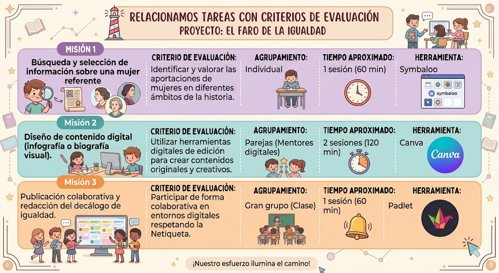

Texto
¿Cómo evaluamos nuestro progreso?
Para asegurar que nuestro Faro de la Igualdad brille con la máxima intensidad, utilizaremos diferentes herramientas que nos ayudarán a saber qué estamos haciendo bien y en qué podemos mejorar. La evaluación en este proyecto es una oportunidad para reflexionar sobre nuestro aprendizaje.
Nuestros Instrumentos de Evaluación
Para que todo el proceso sea transparente y claro, utilizaremos los siguientes recursos:
Rúbrica de Evaluación Digital: Esta será nuestra guía maestra para las misiones de Canva y Padlet. En ella podréis consultar qué niveles de logro existen, desde el nivel Suficiente hasta el Sobresaliente.
Diana de Autoevaluación: Al finalizar el proyecto, cada uno de vosotros coloreará su propia diana. Es vuestro "espejo de reflexión" para valorar vuestro esfuerzo en la investigación, vuestra creatividad y vuestra autonomía con las herramientas TIC.
Feedback Colaborativo: A través de Padlet, aprenderemos a dar y recibir consejos constructivos de nuestros compañeros, siempre respetando las normas de Netiqueta.
Aquí os dejo los criterios de evaluación.
